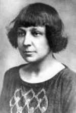

Литература серебряного века
Марина Цветаева родилась 8 октября 1892 года в Москве.
Ее отец Иван Цветаев —  доктор римской словесности, историк искусства, почетный член многих университетов и научных обществ, директор Румянцевского музея, основатель Музея изящных искусств (ныне — Государственный музей изобразительных искусств им. Пушкина). Мать Мария Мейн была талантливой пианисткой. Лишенная возможности делать сольную карьеру, она вкладывала всю энергию в то, чтобы вырастить музыкантов из своих детей — Марины и Анастасии.
В 1910 году Цветаева издала за свой счет первый поэтический сборник «Вечерний альбом».
В январе 1912-го вышли две книги с «говорящими» названиями: «Волшебный фонарь» Цветаевой и «Детство» Эфрона.
Следующий цветаевский сборник «Из двух книг» был составлен из ранее опубликованных стихов. Он стал своего рода водоразделом между мирной юностью и трагической зрелостью поэта.